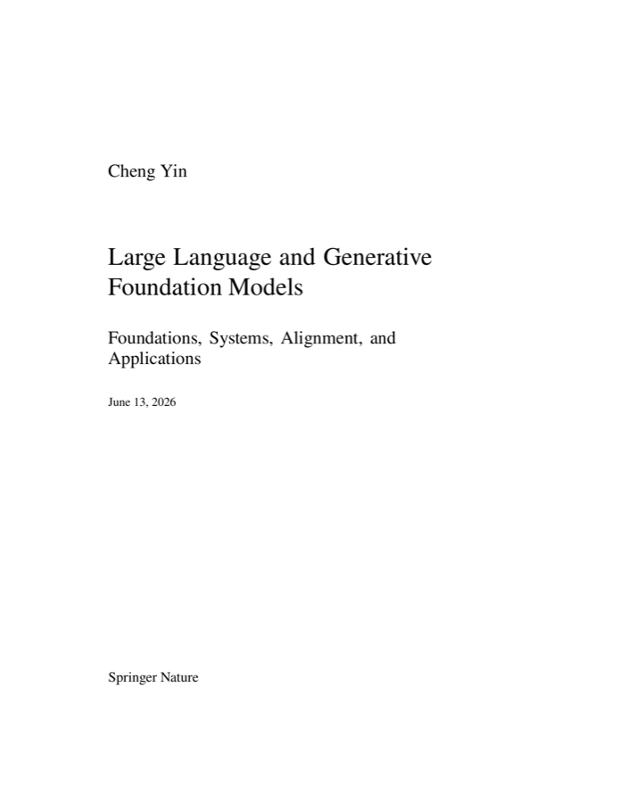

English controlling edition
The English PDF is the controlling publication draft, built from the Springer-style LaTeX source in this repository.
Download book.pdfJune 2026 release candidate
Foundations, Systems, Alignment, and Applications

Editions
The English PDF is the controlling publication draft, built from the Springer-style LaTeX source in this repository.
Download book.pdf中文版与英文目录和核心主题保持对齐，覆盖正文、图表、术语、练习和附录。
下载 book_zh.pdfCitation
@book{yin2026large,
author = {Yin, Cheng},
title = {Large Language and Generative Foundation Models:
Foundations, Systems, Alignment, and Applications},
year = {2026},
url = {http://yincheng429.cn/LLM_Book/},
doi = {10.5281/zenodo.20691216}
}The archived release is available through Zenodo DOI 10.5281/zenodo.20691216 and the OSF mirror.
Archive
Public landing page for the English and Chinese PDFs.
Versioned source and PDF release package.
DOI minted from the published GitHub release archive.
Independent project record linked to the release and DOI.
Quality Gates
The release candidate is checked with a repeatable manuscript audit covering LaTeX builds, PDF metadata, fonts, text extraction, references, figures, tables, bilingual alignment, proofing records, provenance boundaries, repository hygiene, and release inventory.